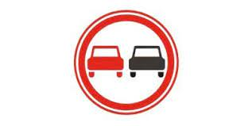
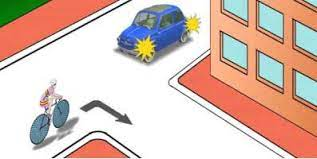
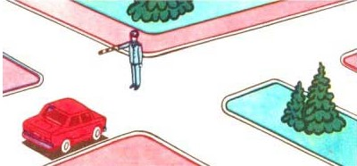
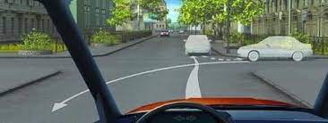
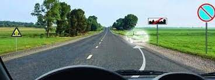
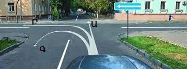
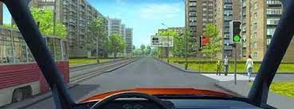
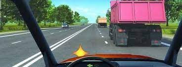

Թեստ 38
30:00
1. «Ճանապարհային երթևեկության անվտանգության ապահովման մասին» ՀՀ օրենքի համաձայն` հետիոտներին են հավասարեցվում`
2. Քանի՞ երթևեկության գոտիներ ունի այս ճանապարհը

3. Տրանսպորտային միջոցների շահագործումն արգելվում է, եթե`
4. Տրանսպորտային միջոցների շահագործումն արգելվում է, եթե՝
5. Բնակավայրերում միևնույն ուղղությամբ երթևեկության 3 և ավելի գոտիների առկայության դեպքում ձախ եզրային գոտի զբաղեցնել թույլատրվու՞մ է արդյոք ընդհանուր օգտագործման տրանսպորտային միջոցներին:
6. Այս ճանապարհային նշանի առկայության դեպքում`

7. Ո՞ր տրանսպորտային միջոցի վարորդը պետք է զիջի ճանապարհը:

8. Երթևեկությունը թույլատրվում է`

9. Խաչմերուկում թույլատրվում է արդյո՞ք հետընթաց կատարումով հետադարձ կատարել

10. Կայանել նշված վայրում

11. Որտե՞ղ է գծվում կանգառն արգելող տեղերը նշող դեղին հոծ գիծը:
12. Թույլատրվու՞մ է արդյոք կոշտ կամ ճկուն կցիչով քարշակման ժամանակ մարդկանց փոխադրումը բեռնատար ավտոմոբիլի թափքում`
13. Ձայնային ազդանշանների կրկնողությամբ ընդհանուր տագնապի ինչպիսի՞ ազդանշան է վարորդը պարտավոր տալ երկաթուղային գծանցի վրա հարկադրական կանգառ կատարելու դեպքում:
14. Պարտավո՞ր է վարորդը միացնել շրջադարձի ցուցիչը` բնակելի գոտում երթևեկությունը սկսելուց առաջ:
15. Նշվածներից ո՞ր ուղղությամբ է թույլատրված երթևեկությունը

16. Ո՞վ առաջինը կանցնի խաչմերուկը
17. Ո՞ր դեպքում կարող եք խաչմերուկն անցնել առանց ճանապարհն երթևեկության այլ մասնակցին զիջելու

18. Թույլատրվո՞ւմ է այս իրավիճակում շարունակել երթևեկությունը զբաղեցրած գոտով:
